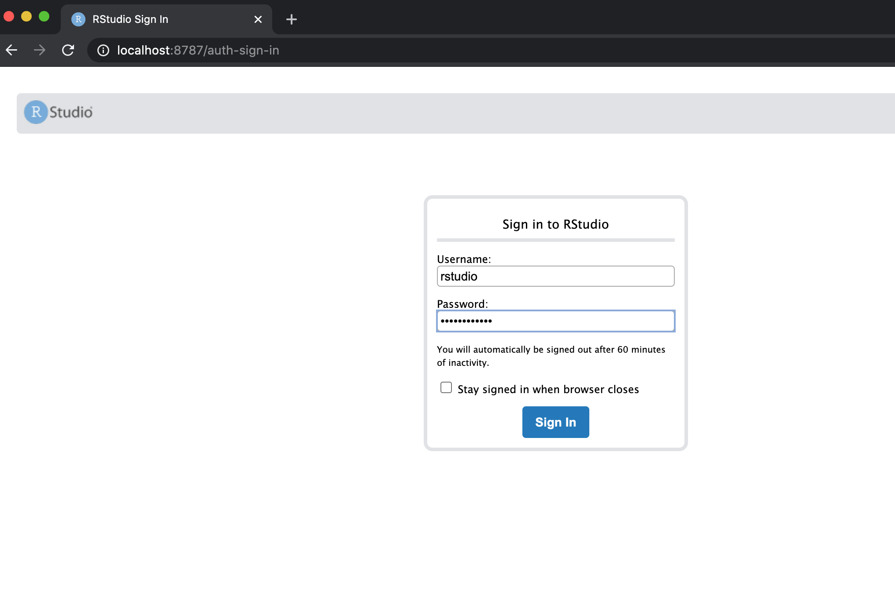
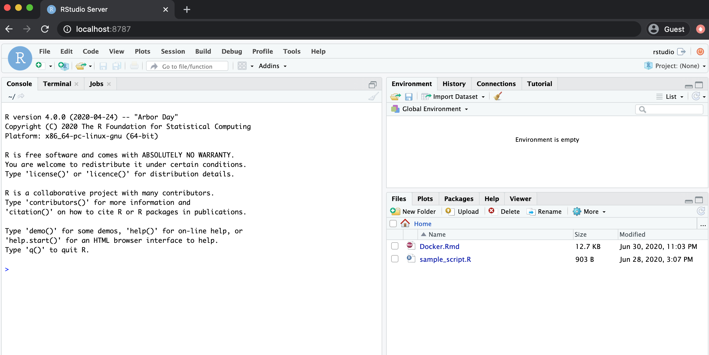

Docker is a very useful method of creating and running isolated versions of software. It is useful because working versions of software can be built and run using only the necessary libraries. Another useful feature is that the libraries used to build the software are fixed, and when sharing a Docker image it will run identically on different machines. For example, if you build and run a simulation using R 3.6.0, you can build a Docker image containing your code and R 3.6.0. This image can be shared with anyone and it will allow them to run your code using R 3.6.0, an exact replica of the environment you originally used.
This document gives an introduction with a focus on using R, for a more general introduction to Docker and help with installation and setup, see the following page: docs.docker.com/get-started (4 min read).
A Docker image is a template for an environment, software and files. Images are created using a Dockerfile which is covered later in this document. A Docker container is a runnable instance of an image. Once an image is created, a container can be started using this image; at this stage the software will be live on the host machine. For example, if an RStudio container is running, then a copy of RStudio will be available to use. This copy will be independent of any other local version of RStudio.
You can have many containers running simultaneously on your machine, and in general they will be isolated and independent of each other. Images and containers can be managed through commands on a terminal or a bash shell.
There are many different R and RStudio Docker images.
Official R images can be found here: https://hub.docker.com/_/r-base
RStudio and Shiny server images can be found here: https://hub.docker.com/u/rocker
An image can be downloaded using the docker pull command. Alternatively, when docker run is used if the image is not found on your local system it will be downloaded.
To run an RStudio image use the following command in terminal:
$ docker run -detach -p 8787:8787 -e PASSWORD=yourpassword --name my-rstudio rocker/rstudioThere are a few things to note, namely the flags used in the run command:
-detach or -d for short, runs the container in the background of your terminal.--publish or -p forwards the port on your machine to the container’s port. This is important for running RStudio (port 8787) and/or a Shiny server (port 3838) as a container. It is also important when running multiple containers.--name gives a name to your container. This is not necessary but it’s useful for managing containers (stopping, removing, etc..).-e is used for environment variables. In this case the variable PASSWORD needs to be provided, any string can be chosen as the password.To check the containers currently running on your machine use docker ps --all, you should see similar output to below.
$ docker ps --all
CONTAINER ID IMAGE COMMAND CREATED STATUS PORTS NAMES
96f368aefb83 rocker/rstudio:3.6.0 "/init" 9 seconds ago Up 8 seconds 0.0.0.0:8787->8787/tcp my-rstudioRStudio can now be opened by going to localhost:8787 in a web browser. The username will be rstudio and password will be the environment variable provided. In the case above I picked yourpassword.

The -p flag in the run command determines which port RStudio can be found at. For example, if we used -p 8000:8787 RStudio will then be accessible using localhost:8000 in a web browser. This is useful when running multiple versions of R and RStudio, because each container will need to be routed through a different port.
Note: more advanced uses of Docker containers allow communication between containers, but this will not be covered here. See the Docker website for further reading.
An important feature of Docker images is version control, which is managed by ‘tagging’ an image. The available RStudio tags can be found here. To start a container with a specific tag, the tag name is added with a colon after the image name.
For example, to use RStudio with the current development version of R use:
$ docker run -d -p 8001:8787 -e PASSWORD=yourpassword --name my-rstudio-devel rocker/rstudio:develor to use version 3.6.0:
$ docker run -d -p 8002:8787 -e PASSWORD=yourpassword --name my-rstudio-363 rocker/rstudio:3.6.3As mentioned in the section above, both containers can be run simultaneously. In this example, the development and 3.6.3 versions of R will be accessible simultaneously in a web browser at localhost:8001 and localhost:8002 respectively.
latest is used as a default tag when no specific tag is provided, i.e. if only rocker/rstudio is used then rocker/rstudio:latest will be downloaded/started.
To stop a container use the docker rm command:
$ docker rm --force my-rstudio-devel$ docker rm --force my-rstudio-363For reproducible research the environment used each time to run the code should match as much as possible. Details such as the version of R and the version of individual packages/libraries can have an effect on the final results.
We have seen that a specific version of R can be chosen when using Docker. R scripts and data can also be included in a custom Docker image.
A complete standalone environment can be created so that an end user does not need to worry about installing any extra libraries or having specific software installed. The only requirement is to have Docker installed.
To build a Docker image, you will need to create a Dockerfile. This file is essentially a configuration determining what libraries, files and/or data should be included in the image. This file can be created and edited using any editor such as VIM or even RStudio. The file does not use an extension and is usually simply saved as Dockerfile.
The example file below can downloaded using this link.
FROM rocker/rstudio:4.0.0
RUN apt-get update \
&& apt-get install -y --no-install-recommends \
libxml2 \
git
RUN install2.r --error \
--deps TRUE \
devtools \
ggplot2
COPY Docker/Docker.Rmd /home/rstudio/
COPY Docker/Simple_Example/sample_script.R /home/rstudio/FROM, in this example rocker/rstudio:4.0.0. This is a pre existing image which has R and RStudio already installed.RUN apt-get installCOPY is used to copy files or data from your system into the image. If you want to be able to access files or data in the container they must be copied across in this way.install2.r--error flag ensures that the image build will fail if the R library fails to install.devtools packageRUN R -e 'install.packages("devtools")'RUN R -e 'devtools::install("ggplot2", version = "3.3.0")'Some libraries can take a long time to install. If you consistently use a certain set of libraries it may be useful to create an image containing these libraries. This can be used as your base image to start from. For example, if you use many of the tidyverse libraries, these have a long installation time. A quicker way to build the above image starts with rocker/tidyverse:4.0.0.
FROM rocker/tidyverse:4.0.0
COPY Docker/Docker.Rmd /home/rstudio/
COPY Docker/Simple_Example/sample_script.R /home/rstudio/By default Docker will look for a file called Dockerfile in the current working directory. In this case the following command can be used to build an image. The --tag or -t is used to give the image a name, in this case the image will be saved as image_name.
$ docker build --tag image_name .The -f flag can be used to specify what file to use as the dockerfile. In the example below a file called mycustomedockerfile is used to create a Docker image named image_name.
$ docker build -t image_name -f mycustomedockerfile .The following example uses the files contained in this Github repository.
Navigating to the root directory of the repository using terminal, and running the following commands builds and pushes the image.
$ docker build -t sample_rstudio:1.0 -f Docker/SimpleDockerfile .
$ docker tag sample_rstudio:1.0 bolandai/sample_rstudio:1.0
$ docker push bolandai/sample_rstudio:1.0The Dockerfile is named SimpleDockerfile and is located in the Docker folder within the repository.
sample_rstudio and tagged 1.0.Since it is a public Docker repository, anyone with Docker installed can run the following command and start a container with my image.
$ docker run -d -p 8787:8787 -e PASSWORD=mypassword bolandai/sample_rstudioThe R Markdown file used to create this document is included in the image and is available to edit and knit in the Home directory when RStudio starts.

It was mentioned earlier that Docker containers are completely isolated. However, sometimes it is necessary to communicate outside of the container, for example to save data on your the local machine.
The Docker container can be linked with a local folder at the time of starting the container. The -v flag is used for this purpose. The below command will link the RStudio home folder with the desktop of the local machine running the container. Anything saved or edited in the home folder when using the container will be stored on the local desktop.
$ docker run -d -p 8787:8787 -e PASSWORD=mypassword -v ~/Desktop:/home/rstudio/ bolandai/sample_rstudioTo create a nice workflow, it’s possible to automate the Docker build process. Once code is stored on Github, the docker image can be remotely built when the code is updated.
Two options for this are to use Docker Hub or Travis CI
Docker Hub which is used for storing and sharing images can be linked to Github so that the image is automatically built for specific branches when code is updated.
See this article for more information.